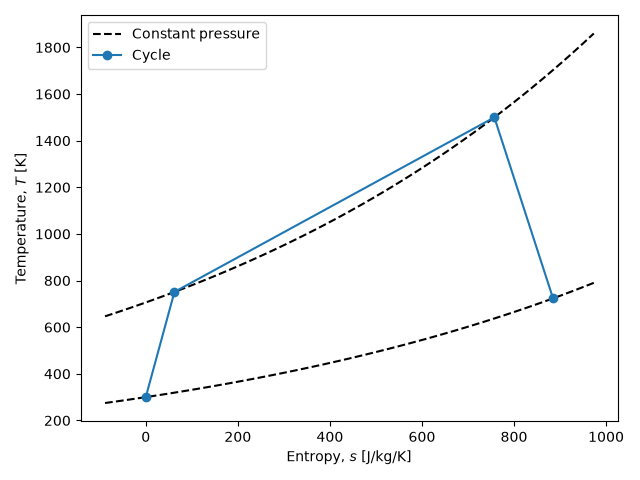

Note
Go to the end to download the full example code.
Gas turbine Joule cycle¶
This example uses the ember.block.Block API to perform a
thermodynamic analysis of a gas turbine operating on the Joule (Brayton)
cycle with non-isentropic turbomachinery, then draws the corresponding
temperature–entropy diagram.
Because all property evaluations go through a ember.fluid equation of
state assigned with Block.set_fluid, the
Block operations are working-fluid independent: only the object passed to
Block.set_fluid would change.
import numpy as np
import matplotlib.pyplot as plt
import ember.block
import ember.fluid
Working fluid and cycle parameters¶
We model air as a perfect gas and specify the cycle by its overall pressure ratio, a (common) polytropic-style isentropic efficiency for both the compressor and turbine, and the ratio of turbine-inlet to compressor-inlet temperature.
fluid = ember.fluid.PerfectFluid(cp=1005.0, gamma=1.4, mu=1.8e-5, Pr=1.0)
PR = 20.0 # Overall pressure ratio
eta = 0.9 # Turbomachinery isentropic efficiency
Theta = 5.0 # Turbine-inlet to compressor-inlet temperature ratio, T3 / T1
Evaluating the cycle stations¶
A single Block with four entries holds the four cycle
stations: compressor inlet (1), compressor exit (2), turbine inlet (3) and
turbine exit (4). Each thermodynamic state is fixed by two properties, and
the isentropic efficiencies relate the real enthalpy rise/drop to the ideal
one.
block = ember.block.Block(shape=(4,))
block.set_fluid(fluid)
# (1) Compressor inlet, atmospheric conditions
P1 = 1e5
T1 = 300.0
block[0].set_P_T(P1, T1)
# (2s) Isentropic compressor exit: raised pressure, same entropy
P2 = PR * P1
block[1].set_P_s(P2, block[0].s)
# (2) Real compressor exit via isentropic efficiency
h1, h2s = block.h[:2]
h2 = h1 + (h2s - h1) / eta
block[1].set_P_h(P2, h2)
# (3) Turbine inlet at the specified temperature ratio
T3 = T1 * Theta
block[2].set_P_T(P2, T3)
# (4s) Isentropic turbine exit: dropped pressure, same entropy
block[3].set_P_s(P1, block[2].s)
# (4) Real turbine exit via isentropic efficiency
h3, h4s = block.h[2:]
h4 = h3 - (h3 - h4s) * eta
block[3].set_P_h(P1, h4)
Cycle efficiency¶
The thermal efficiency is the net specific work output divided by the heat added in the combustor.
Cycle thermal efficiency: 0.434
Temperature–entropy diagram¶
Finally we overlay the cycle path on the two constant-pressure lines that
bound it. The constant-pressure lines are themselves evaluated with a
Block, sweeping entropy at fixed pressure.
ni = 50
lines = ember.block.Block(shape=(2, ni))
lines.set_fluid(fluid)
s_min, s_max = block.s.min(), block.s.max()
Ds = 0.1 * (s_max - s_min)
s = np.linspace(s_min - Ds, s_max + Ds, ni)
lines[0].set_P_s(P1, s)
lines[1].set_P_s(P2, s)
lines = lines.transpose()
fig, ax = plt.subplots()
const_P = ax.plot(lines.s, lines.T, "k--")
const_P[0].set_label("Constant pressure") # Label only one of the two lines
ax.plot(block.s, block.T, "-o", label="Cycle")
ax.set_xlabel("Entropy, $s$ [J/kg/K]")
ax.set_ylabel("Temperature, $T$ [K]")
ax.legend()
fig.tight_layout()
plt.show()

Total running time of the script: (0 minutes 0.065 seconds)